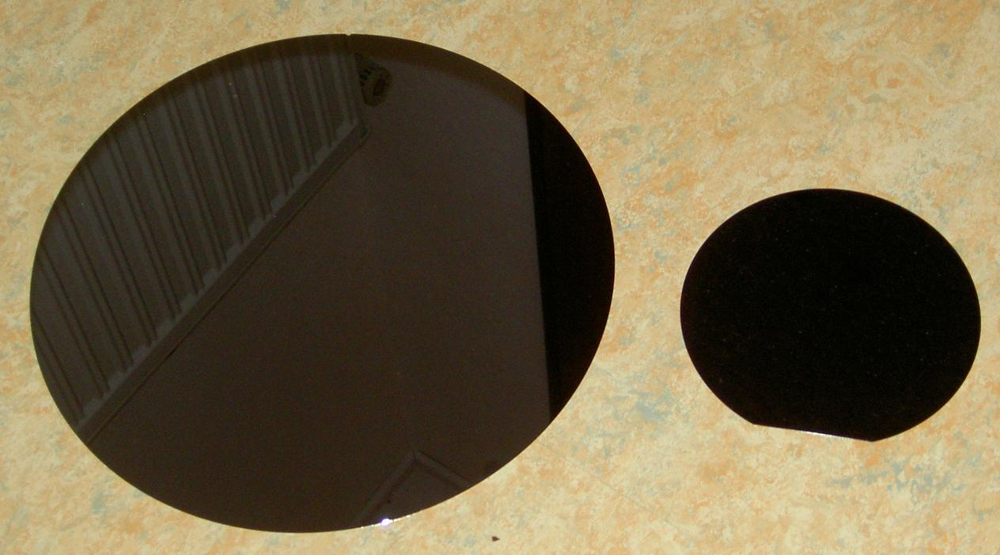

SILIKON MULAI MENTOK!
Hukum Moore Mentok.
Dua Teknologi Ini Siap Gantiin Silikon
Pas transistor udah sekecil ukuran atom, kita nggak bisa lagi ngandelin elektron lambat. Saatnya partikel cahaya dan kuantum unjuk gigi.

300MM SILICON WAFER
Wafer Semikonduktor Silikon
Pola mikro-transistor konvensional yang sekarang terbentur kebocoran elektron liar dan panas ekstrem.
DUA JAGOAN BARU
ARSITEKTUR INTI
01. Superkonduktor Kuantum
0Ω ResistansiQubit superposisi ngitung miliaran kombinasi secara paralel tanpa hambatan di suhu -273°C.
02. Photonic Chip (Cahaya)
300.000 km/sData dialirkan lewat partikel foton secepat kilat di suhu kamar normal, adem dan nol panas.
Penasaran wujud asli mesin & cara kerjanya? Geser yuk 👉